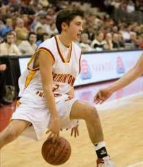
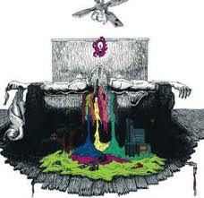
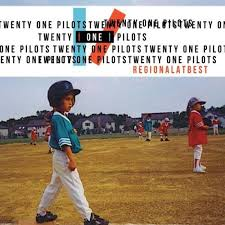
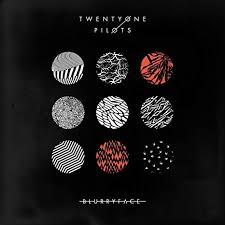

Tyler Joseph nació el 1 de diciembre de 1988 en la ciudad de Columbus, Ohio. Creció junto con dos hermanos, Zack (también cantante) y Jay, y una hermana, Madison. Su madre, Kelly, era profesora de matemáticas en el distrito escolar de Olentangy, antes de pasar a ser entrenadora de balomcesto en la escuela Olentangy Orange High School en 2013. Su padre, Chris, también trabajó como entrenador en la escuela Worthington Christian High School desde 1996 hasta 2005, y actualmente es director de escuela. Joseph jugó al baloncesto desde muy temprana edad, y jugó como armador en la escuela de su madre. En 2008, el equipo de baloncesto de Joseph quedó en segundo lugar en un torneo estatal.
Después de ver a un compositor en el club High Street, rechazó una beca de baloncesto de la Universidad de Otterbein, y comenzó a tocar música después de encontrar un viejo teclado en su armario (un regalo de Navisas de su madre)
Joseph formóTwenty One Pilots en el año 2009 en Columbus, Ohio, y luego se le unirían sus amigos de secundaria Nick Thomas y Chris Salih. El nombre de la banda surgió mientras leía Todos eran mis hijos de Arthur Miller, una Obra sobre un hombre que debe decidir que es lo mejor para su familia después de causar la muerte de veintiún pilotos durante la Segunda Guerra Mundial. Joseph explicó que el dilema moral de la historia fue la inspiración para el nombre de la banda.8 El 29 de Diciembre de 2009, lanzaron su álbum debut homónimo, y realizaron una gira por Ohio.
El tercer álbum del dúo, Vessel, fue lanzado el 8 de enero de 2013, y quedó en el puesto número 58 en el Bildboard200. El cuarto álbum, Blurryface, fue lanzado el 17 de mayo de 2015, dos días antes de su fecha de lanzamiento prevista. Y el quinto almbú, Trench fue lanzado el 5 de octubre del 2018.
Aquí les dejaré una tablas con los albúms y un link para escucharlos
| Twenty One Pilots |  | Click para escuchar |
| Regional at Best |  | Click para escuchar |
| Vessel | Click para escuchar | |
| Blurryface |  | Click para escuchar |
| Trench | Click para escuchar |
Ahora les mostraré una de mis canciones favoritas en concierto, es algo realmente hermoso
Seguimos con Tyler Joseph.
El 24 de diciembre de 2013, en víspera de Navida, Joseph cantó "O come, O come, Emmanuel" en Christmas With the Stars en New Albany, Ohio. El video fue subido a Youyube el 14 de febrero de 2014. También realizó un segmento de magia con el anfitrión de la iglesia y presentador David McCreary para el espectáculo. En diciembre de 2014, Joseph contribuyó como vocalista de apoyo en la canción "Sickly Sweet Holidays" escrita por Dallon Weekes de Panic! at the Disco.
Joseph es cristiano, y su fe influye en la música que escribe. Contrajo matrimonio con Jenna Black el 28 de marzo de 2015. Tanto Joseph cómo Josh Dun tienen un tatuaje con la letra "X", que simboliza la dedicación a sus fanáticos en su ciudad natal de Columbus, Ohio. El de Joseph se encuentra ubicado en su bíceps derecho, mientras que el de Dun detrás de su oreja derecha.